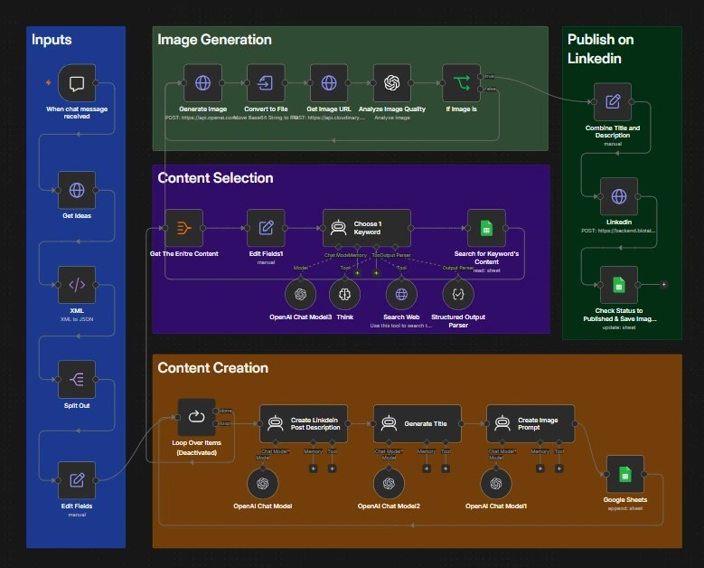

AI-Powered LinkedIn Content Creation & Auto-Publishing System
From content ideas to polished LinkedIn posts.

Overview
An end-to-end LinkedIn automation system that turns content ideas into professional posts with AI-generated titles, captions and visuals. A multi-agent AI workflow researches trending topics, selects high-potential content, generates and evaluates images, and publishes optimized posts to LinkedIn automatically. Google Sheets tracks content and publishing status.
Tech stack
- n8n
- OpenAI GPT
- DALL·E / AI Image API
- Tavily
- LinkedIn API
- Google Sheets
- HTTP Requests
- Webhooks
Potential business impact
- Automated content creation
- Consistent LinkedIn presence
- Reduced marketing workload
- Faster content production
- Improved brand visibility
- Scalable social media marketing
Independent project built to demonstrate the approach.